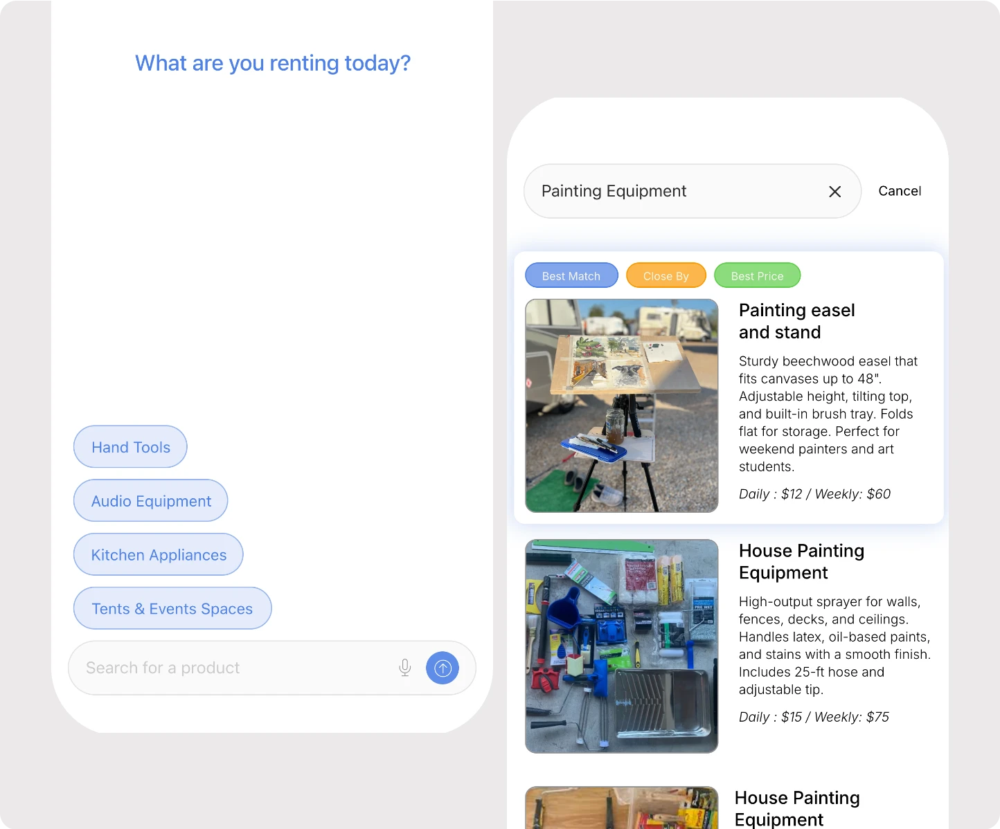
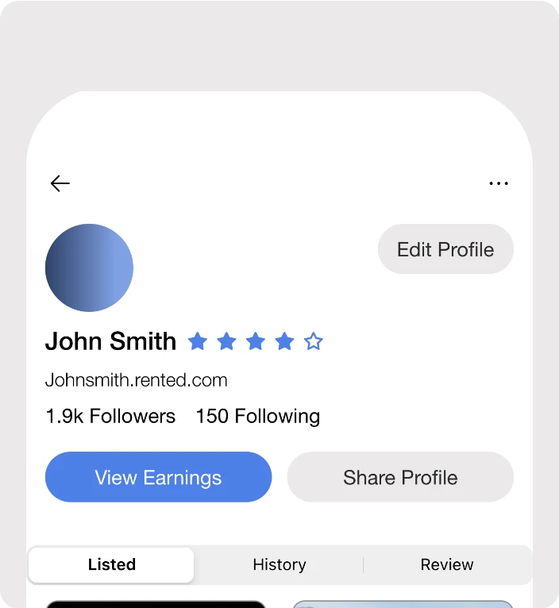
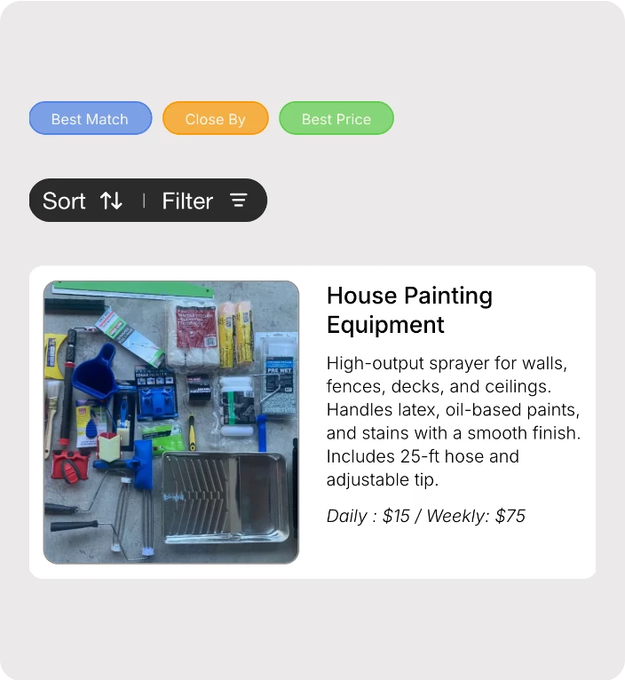

Rented
Designing a peer-to-peer rental experience for urban renters
Overview
Most people own tools and gear they use once, then store forever. Rented lets neighbors lend and borrow instead. I served as sole designer across onboarding, browse, PDPs, and profiles, from November 2024 through engineering handoff in February 2025.
Outcome
The redesign successfully validated key product assumptions before development. Across 2 rounds of moderated usability testing (7 sessions), participants completed onboarding in under one minute, while iterative improvements increased first-task completion from 71% to 100% between testing rounds. Introducing personalized recommendations also improved early product discovery, with 100% of returning participants engaging with the new Best Match section first. The project concluded with a developer-ready handoff of 30+ high-fidelity screens, annotated components, and an interactive prototype.
Problem
Existing P2P rental apps get onboarding, role flexibility, and browsing wrong. Hygglo over-verifies, Craigslist under-verifies, no platform handles renter/lister duality, and browsing chaotic categories.
Research
Two rounds of comparative sessions — Round 1 with 4 participants, Round 2 with 3 of the same on a revised prototype — walked users from familiar resale apps (eBay, Grailed, Depop) through competitors to an early Rented prototype. Three patterns held: minimal search won (Depop users cited its simplicity), role-switching was universal (every participant saw themselves as both lister and renter, yet every competitor forced one or the other), and long catalogs caused drop-off (users wanted “something at the top that’s actually for me”).



Design Decisions
Onboarding leads with SSO and a single category prompt, getting users browse-ready in under a minute with no verification wall, while profiles use a tabbed layout that treats renter and lister roles equally and surface trust signals right at the decision point on the PDP. Browse changed most between rounds — Round 2 added a “Best Match” section (driven by Round 1 drop-off, and the top engagement point in every session) and suggestion tags above search that outperformed direct text input. Filtering across mixed inventory, like a drill versus a tent, remained unresolved.